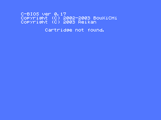

openMSX used to be difficult to install, but it isn't difficult at all, nowadays! At least: it shouldn't be.
If you're using Windows, the easiest way to install openMSX is by running the installer. It's the .exe file you can find in the downloads section of the openMSX SourceForge.net site. After this, you should have a working openMSX and openMSX Catapult.
If you're using another operating system, there is no installer available. If your system has a package management system, it's easy to install openMSX by using that, of course. If you have to install it from source, it's also not very difficult. Just read the Compilation Guide.
Note that in any case, there are no system ROMs installed, so only the C-BIOS machines work out-of-the-box. See also the next couple of questions.
If you still think openMSX is difficult to install, please tell us why! Contact info is in the manuals.
Since openMSX comes with the optional GUI dubbed "openMSX Catapult", it is not difficult to use either! The Windows installer installs it by default. For other systems, the same counts as for openMSX itself. Check out the Catapult manual for more information. For basic usage, you just select a machine to run and click on "Start"!
Catapult doesn't give you access to all features of openMSX, though. You can do a lot more by using the openMSX built in console. You can read a lot more about this in the User's Manual.
If you still think openMSX is difficult to use, please tell us why! Contact info is in the manuals.
The MSX system ROMs are copyrighted. In other words: it's illegal to include them in our software package without a license. See also the Setup Guide.
For version 0.5.0: you can put all the ROMs in a ROM pool, which is a central ROM directory. The default location is share/systemroms.
You can also do it in the way of the older versions: put the ROMs for the machine called WHATEVER in share/machines/WHATEVER/roms and for the extension called WHATEVER in share/extensions/WHATEVER/roms.
See also the Setup Guide.
You are probably talking about this:

openMSX doesn't come with any system ROMs, see 2. Why doesn't openMSX come with system ROMs?. To have something to be able to run some software, openMSX comes with a free replacement of an MSX BIOS ROM called C-BIOS, written by BouKiChi and Reikan. This is also what you can see in the screen: C-BIOS 0.17.
So, the message is not from openMSX, but from C-BIOS, which tries to start a cartridge that is inserted in the MSX that is being emulated by openMSX. And it seems you didn't insert any cartridge for it... So, either run openMSX with a ROM image or install real MSX system ROMs for a certain machine and run that one.
Note that the current version of C-BIOS can only run cartridges and does not support disk or tape usage. More information can be found in the Setup Guide.
Unfortunately, we made a small mistake in the Windows release of 0.4.0. However, the problem can be easily fixed by editing the file share\settings.xml with Notepad or some similar text editor. Look for the section marked "Audio mixer settings" and change the 'samples' setting from 512 to 1024 or 2048. You can play around with the setting: just save the file and restart openMSX to test it. Note that later versions should have this fixed.
The effect of a wrong setting is that if it is too high, you will get an irregular tempo of the music (high latencies) and if it's too low, the music will sound choppy.
At the moment, it is not clear what the default value of this setting should be. It seems that the perfect combination of samples and frequency depends on the system. So, feel free to experiment with them.
openMSX only supports the emulation of the Sunrise IDE interface at the moment. The extension for this is called 'ide'. The extension has a built in harddisk configuration, in the form of a 100MB sized disk image. If you want to change this, you'll have to edit the file in share/extensions/ide/hardwareconfig.xml. If the harddisk image is not present, or too small, the file is created or extended to the proper size.
The 'ide' extension needs the BIOS that can be flashed into the Sunrise IDE interface. It can be downloaded from the Sunrise for MSX web site.
When using this extension for the first time, one has to consider it as using a real Sunrise IDE interface with a 100MB empty harddisk connected to the master slot. How to proceed is written in the text files that come with the FDISK program for IDE, downloadable from the Sunrise for MSX web site. There is also a thread on the MSX Resource Center forum that may give you valuable hints.
For clarity: because the emulation is done on a big disk image, you need free disk space for this image, which can be quite big (default 100MB). Also, you can't really use your normal PC harddisk as an MSX harddisk for this extension. (Maybe on UNIX systems it works if you choose a device like /dev/hde as harddisk image file, but we have not tested it and do note that it can cause loss of data of that partition or disk!!) This means that there can be no data corruption of your PC's harddisk.
If you still want to use files from your real PC harddisk on the emulated MSX, you have to use the DirAsDSK feature. This has nothing to do with harddisk emulation. It simply creates a virtual 720kB disk image in memory from the files that are in the directory that you specified as if it were a disk image. So:
will try to put all files of the current dir on a disk image in memory and start openMSX with it. Note that this feature is still very bare bones: it doesn't support sub directories and it skips all remaining files if the virtual disk is full.
$Id$